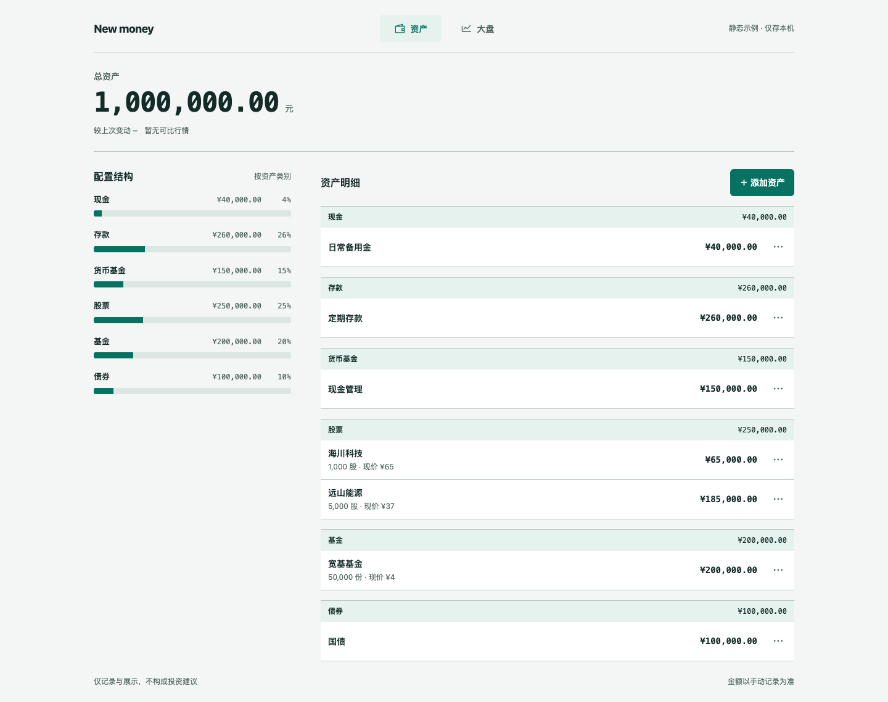
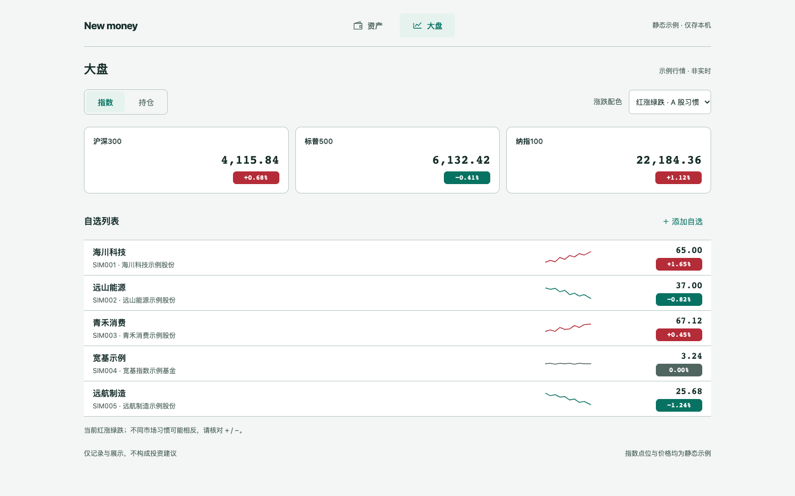

资产
总资产为唯一一级数字；按类别横条表达配置，明细兼容普通金额与数量/现价。加、改、删均留在页内。
打开资产页OPHE-30 · 两页范围 · 2026-10-28
沿用既有 A tokens，按最新结构重排。产品只保留「资产 / 大盘」两页。
375 用底部两个 tab，1440 移到顶部。名称与顺序稳定，当前页有明确高亮。推荐这一组合：手机便于触达，桌面保留列表高度。

总资产为唯一一级数字；按类别横条表达配置，明细兼容普通金额与数量/现价。加、改、删均留在页内。
打开资产页
指数横滑带、56–64px 自选行、无轴迷你走势、右对齐价格与实底白字胶囊；默认红涨绿跌。
打开大盘页参照取舍：Apple Stocks 的行结构、同花顺的指数横排、雪球的总额层级与默认涨跌色。所有行情均为虚构静态示例；仅记录与展示，不构成投资建议。